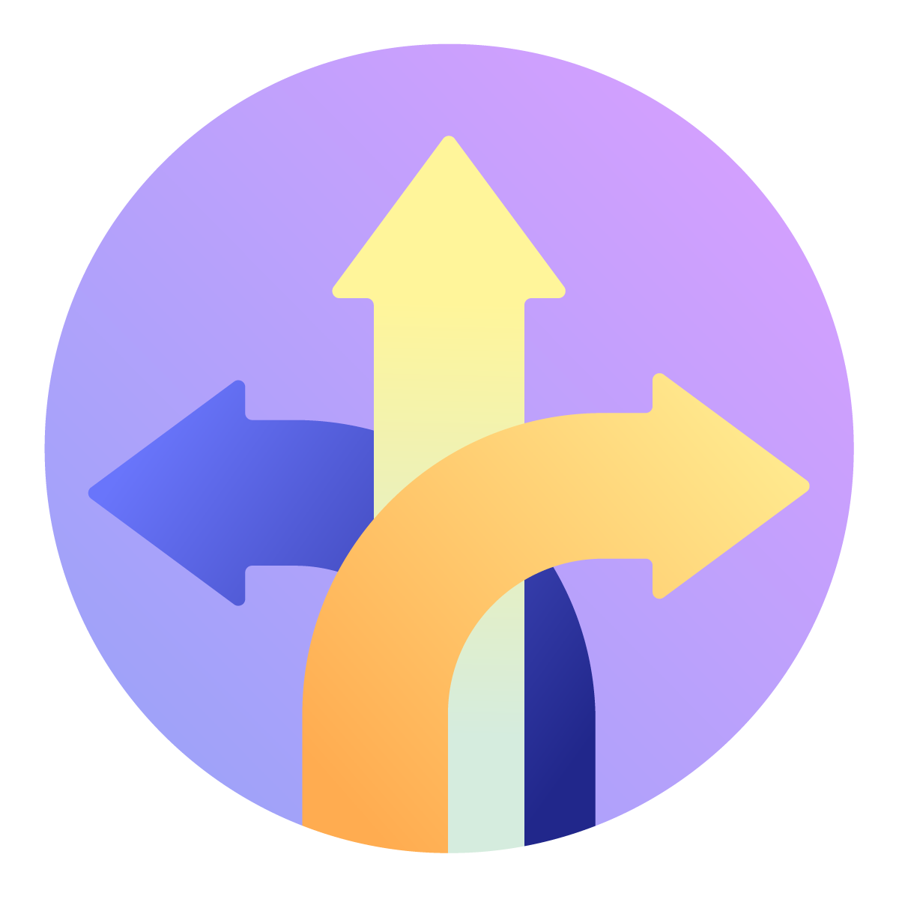

La voix du terrain
Témoignages d’enseignants, de formateurs et de responsables de déploiement, contextualisés et datés.
Depuis près de dix ans, Édumalin est déployé dans des contextes éducatifs variés. Nous suivons les usages, la progression et les retours du terrain afin d’améliorer la plateforme et de documenter les conditions dans lesquelles elle apporte le plus de valeur.
Témoignages d’enseignants, de formateurs et de responsables de déploiement, contextualisés et datés.

Cas d’usage, publics concernés, durée, modalités, indicateurs d’usage et résultats observés.
Pré-études, analyses externes, protocoles de recherche et résultats disponibles, en précisant leur niveau de robustesse.
Étude de cas en cours de rédaction.
Étude de cas en cours de rédaction.
Étude de cas en cours de rédaction.
Verbatims et logos défileront ici. Chaque partenaire scientifique ou institutionnel sera présenté avec la nature exacte de la relation : la présence d’un logo ne doit pas laisser entendre une validation scientifique ou commerciale inexistante.
Nous publions uniquement des témoignages contextualisés et datés.